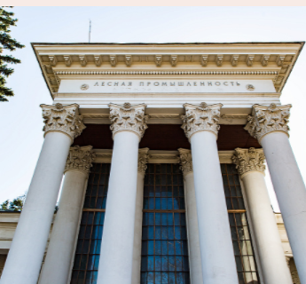

|  |
Музей «4 стихии»
Павильон, посвященный лесной промышленности, спроектированный в стилистике сталинского ампира. Изначально экспозиция рассказывала о посадках и восстановлении леса, а затем тематика была расширена, и в экспозиции также стали демонстрироваться методы использования и переработки древесины. Впоследствии именно эта тематика стала основной.
Павильон построен в 1954 году по проекту архитектора В. В. Толкушкина.
В 1954–1955 годах — «Лесное хозяйство», в 1958–1966 годах — «Лесная и деревообрабатывающая промышленность».
|